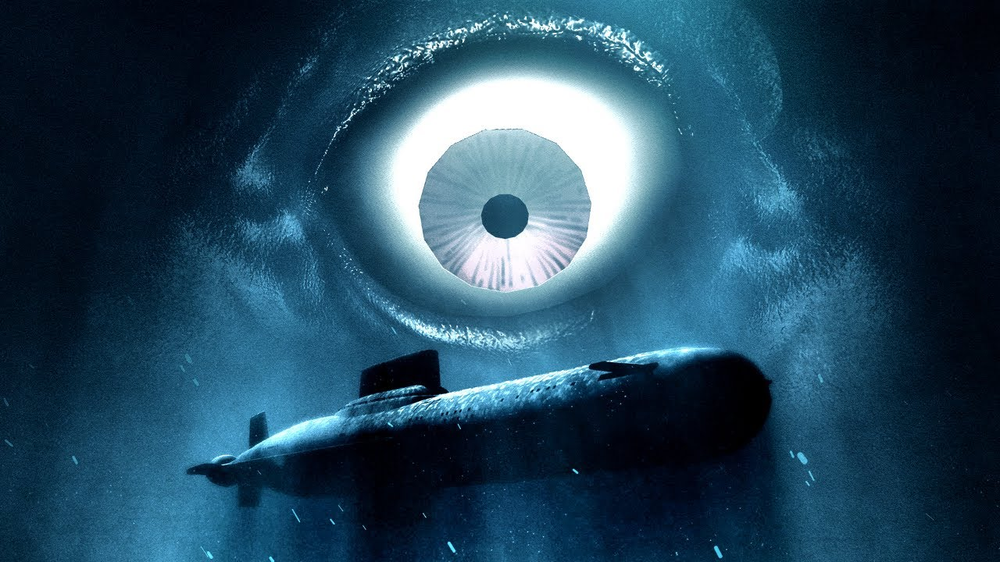

The captain tells you the truth.
Due the sun’s death, earth has also started to reach it’s limits, and soon
all crews on submarines will run out of food and resources.
However, there is a portal in the abyssal plains that is able
to transport the entire crew to an alternate Earth.
He decided to accept this mission to go the the portal.
He also tells you that he has heard of the recent disappearances,
and that he has prepared a force field just in case.
You believe him, and the submarine descends down to the plains.
Accept
Reset
Go Back to previous decesion
